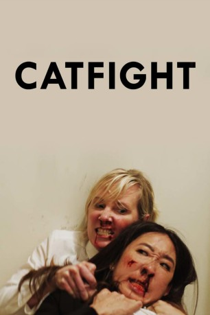

#9427 Catfight
 
 IMDB-Wertung: 5.8 / 10
IMDB-Wertung: 5.8 / 10  Metascore: 0
Metascore: 0 
Die erfolgreich verheiratete Veronica und Künstlerin Ashley waren sich schon auf dem College nicht grün. Jetzt - 20 Jahre später - begegnen sich die beiden narzisstischen und egozentrischen Ladies auf einer Party und lassen ihre Aversionen in einem blutig-brutalen Kampf mit allen Mitteln aneinander aus. Mit verheerenden Folgen: Veronica landet für zwei Jahre im Koma und sieht sich anschließend mit dem unerwarteten Erfolg der verhassten Künstlerin konfrontiert. Der Auftakt für einen bitterbösen, satirischen (und blutigen) Reigen, der nur Verliererinnen kennt...
Jahr: 2016
Dauer: 95 Minuten
FSK: 16
Land: USA Studio: Dark Sky FilmsTonspuren: DTS - ,
Untertitel: Deutsch,
Auflösung: 1080p (1920x1080) Größe: 9441 MB
Genre: Drama, Komödie
Regisseur: Onur Tukel
Drehbuch: Onur Tukel
Soundtrack:
Darsteller:
 Sandra Oh als Veronica
Sandra Oh als Veronica Anne Heche als Ashley
Anne Heche als Ashley Alicia Silverstone als Lisa
Alicia Silverstone als Lisa Amy Hill als Aunt Charlie
Amy Hill als Aunt Charlie- Ariel Kavoussi als Sally
 Damian Young als Stanley
Damian Young als Stanley Stephen Gevedon als Tom Ferguson The Art Collector
Stephen Gevedon als Tom Ferguson The Art Collector- Giullian Yao Gioiello als Kip
 Tituss Burgess als John The Physical Therapist
Tituss Burgess als John The Physical Therapist Jay O. Sanders als Angry Guy
Jay O. Sanders als Angry Guy Peter Jacobson als Carl
Peter Jacobson als Carl Catherine Curtin als Carl's Wife
Catherine Curtin als Carl's Wife Ronald Guttman als The Man In The Towell
Ronald Guttman als The Man In The Towell- Eva Dorrepaal als Claire The Other Art Collector
- Jason Selvig als Sperm Donor
 Jordan Carlos als Howie The Deaf Guy
Jordan Carlos als Howie The Deaf Guy- Justiin A. Davis als Henry, Donna's Son
 Ivana Milicevic als Rachel
Ivana Milicevic als Rachel- Betsy Holt als Rose
- Annie McCain Engman als Christie, Baby Shower Attendee
- Marisa Vitali als Debra, Baby Shower Attendee
- Emmy Harrington als Tiffany, Baby Shower Attendee
- Kevin Scanlon als Party Guest
- Randy Gambill als The Fart Machine
- Karl Jacob als Fredrick / Interviewer
 Dylan Baker als Doctor Jones
Dylan Baker als Doctor Jones Craig Bierko als The Talk Show Host
Craig Bierko als The Talk Show Host- Justin Ahdoot als Amid (uncredited)
 Myra Lucretia Taylor als Donna
Myra Lucretia Taylor als Donna- Lisa Haas als Gynecologist
- Franck Raharinosy als Waiter
- Irene Bremis als Baby Shower Attendee
- Leah Shore als Baby Shower Attendee
- Darrill Rosen als Party Guest
- Trapper Yates als Ben
Datei: X:\2016(A-F)\Catfight (2016, FSK16, 1920x1080).mkv seit 31.08.2018
Festplatte: HD 2016(A-Z)
 Es gibt insgesamt 147 Filme in der Gruppe '2016(A-F)'
Es gibt insgesamt 147 Filme in der Gruppe '2016(A-F)'